Operating Documentation
Direction 5500113, Rev# 3
Discovery MR750 3.0T Service Methods
Module Version 7.0, Version Date 7/23/10
Operating Documentation |
Confirm that the main disconnect panel (MDP) locks and tags are in place (see LOTO for the Main Disconnect Panel (MDP)).
| ||||
| ELECTROCUTION HAZARD! | ||||
| HIGH VOLTAGE PRESENT. | ||||
| USE PROPER LOCK OUT / TAG OUT PROCEDURES BEFORE servicing and/or maintaining. |
Illustration 1: GE MDP
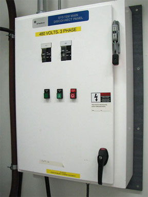
Illustration 2: TEAL MDP
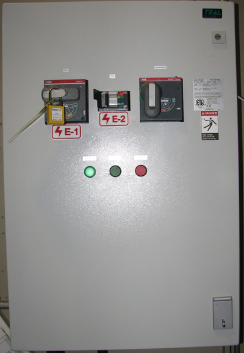
Confirm that the MDP voltage selection is correct. The MDP is shipped with the default voltage setting of 480 VAC.
Confirm that the power transformer connections are properly configured.
Table 1: Power Transformer Connections
| Incoming Voltage: | GE Transformer Terminal: | TEAL Transformer Terminal |
| 380 VAC | H3 | H4 |
| 400 VAC | H3 | H5 |
| 420 VAC | H3 | H5 |
| 480 VAC | H4 | H6 |
If the power connections are not configured properly, have the proper personnel correct the wiring connection. See MDP Operation and Maintenance Manual for additional details.
Illustration 3: GE MDP Control Power Transformer (H4 Input Wiring Shown)
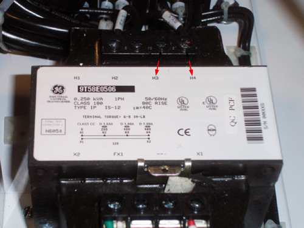
Illustration 4: TEAL MDP Control Power Transformer
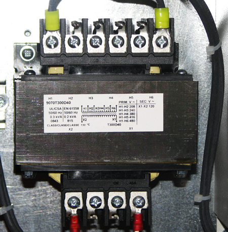
Confirm that the Heat Exchange Cabinet (HEC) voltage selection is correct.
Illustration 5: HEC Cabinet
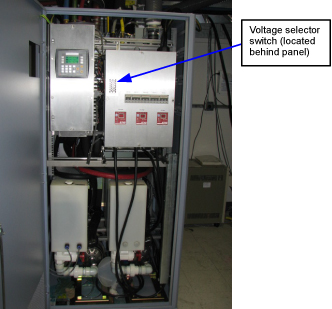
Confirm that the switch is in the proper position.
Table 2: HEC Voltage Switch Positions
| Incoming Voltage: | HEC Voltage Switch Position: |
| 480 VAC | Up |
| 420 VAC | |
| 400 VAC | |
| 380 VAC | Down |
| NOTE: | The HEC can operate at 480 VAC or 380 VAC. |
If the switch is not in the correct position, correct the setting.
Illustration 6: HEC Voltage Selection Switch
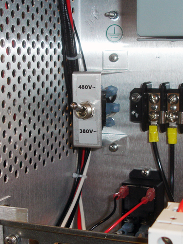
Confirm incoming power wiring to the Power Distribution Unit (PDU) , which is located in the PGR cabinet.
Illustration 7: PGR Cabinet
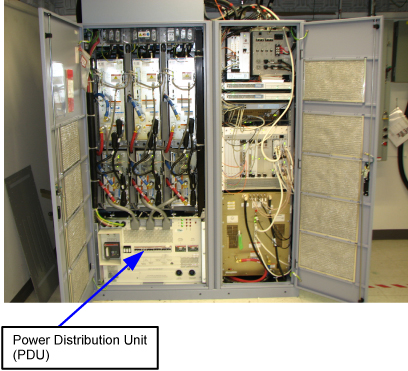
Remove the small cover plate.
Illustration 8: Pre-DVapps Input Voltage Select - Small Cover (79 kVA PDU)
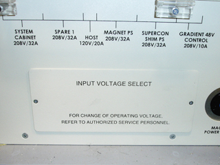
Illustration 9: Input Volage Select - Small Cover (73 kVA PDU)

Confirm that the three input voltage-selection terminal blocks are properly wired. If the power connections are not properly wired, have the proper personnel correct the wiring. Verify that the connections are properly configured before proceeding. See the Teal PDU Installation and Maintenance manual for additional details.
Illustration 10: Input Voltage Selection - Set at 480 VAC
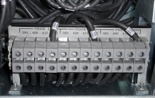
| NOTE: | The following step only applies to pre-DVapps applications. DVapps PDU 5343114 is not adjustable. |
Confirm the overload and short circuit trip settings for the PDU input circuit breaker.
Remove the small cover plate under the main circuit breaker. Lift open the transparent plastic cover on the lower portion of the circuit breaker to access the DIP switches controlling the circuit breaker operation.
The following illustration shows the position of the DIP switches for each input voltage selection. Verify that the switches under the letter “L” are configured correctly.
Illustration 11: Circuit Breaker DIP Switch Settings
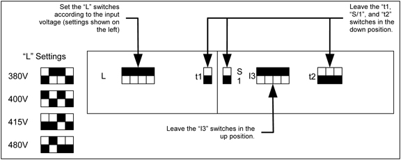
| NOTE: | If the DIP switches are not properly set, have the proper personnel correct the DIP switch settings according to the Teal PDU Installation and Maintenance manual. |
Notify field service and other installation personnel that are working at the installation site that the MDP locks and tags will be removed so that the MDP power can be turned on.
| NOTE: | Before powering on HEC, check all plumbing fittings and
valves. After applying power to the pumps via HEC, verify that there
are no leaks. Check the back of the XRM gradient coil hose fittings
for leaks. The XRM cooling hoses can leak if a hose is pushed into the connector before the blue lock ring is installed. First install the blue lock ring. Next, push the hose into the XRM until it clicks into place, indicating that the hose connection is secure. The blue coolant fluid can stain floors. |
Restore power to the MDP, HEC, and PDU (in this order).
Switch on the PDU's main input circuit breaker.
Press EMO RESET button on the PDU front control panel.
| NOTE: | In the following step, turn on the GRADIENT 420V POWER CB breaker last. |
Except for the Gradient Cabinet power modules, switch all cabinet circuit breakers to ON (GRADIENT 420V POWER CB last). The Gradient Cabinet power module circuit breakers should remain OFF until the room humidity stabilizes under 60 percent.
Confirm that the magnet monitor power is connected to the customer source.
Leak Sensor Functionality Check
| ||||
| Electrocution | ||||
| touching the leak sensor strip when powered on | ||||
| do not touch the leak sensor strip |
This check ensures that the Leak Sensors are functioning appropriately.
Power on the Gradient 48V switch in the PDU. Ensure that all other circuit breakers are off.
Ensure that the AUX board power is on.
Put a small drop of water on the leak sensor strip. Make sure you do not physically touch the leak sensor strip while doing this.
Illustration 12: Leak Sensor Strip
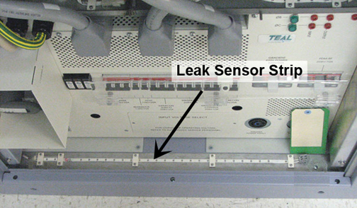
The PDU Main Circuit Breaker should trip (power down) within two minutes of putting the drop of water on the leak strip. This ensures that the Leak Sensor is functioning appropriately. If it is not functioning properly, refer to Leak Detection Sensor Theory & Troubleshooting.
Before you power on the PDU, ensure that the Leak Sensor strip is clean and dry.